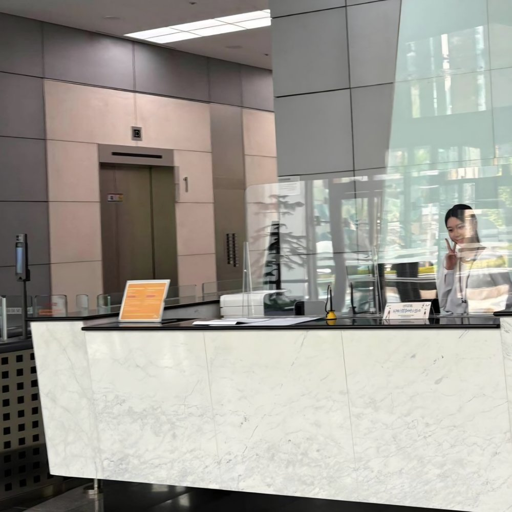

누군가의 목적지를 확인하다가, 제 목적지를 묻기 시작했습니다.
번호를 눌러보세요.
회계 학원 바로 옆에 있던 SKT 사옥을 보며 늘 궁금했고, 언젠가 저 안에서 일해보고 싶다는 마음이 생겼습니다. 그 마음으로 지원해 방문객 안내와 민원 응대, 입·출입 관리 및 카드키 발급 등의 업무를 약 2년간 담당하며 다양한 방문객을 응대하는 경험을 쌓았습니다.

카드를 눌러(또는 Tab으로 이동해 Enter·Space를 눌러) 상황·행동·결과를 확인해보세요.
동그라미를 눌러보세요.
🐶 반려견 아몽이와 산책하고 함께 시간을 보내는 걸 좋아합니다. 평범한 일상에서도 아몽이와 함께하면 소소한 즐거움을 느낍니다.
🧘 몸을 움직이고 나면 한결 가벼워지는 기분이 좋습니다. 요가, 필라테스 등 여러 운동을 배우고 새로운 운동에 도전하는 것도 좋아합니다.
✈️ 새로운 곳에 가서 맛있는 음식을 먹고, 그곳에서 만난 사람들과 이야기를 나누는 걸 좋아합니다. 가고 싶은 곳을 찾아 직접 동선을 짜고 여행을 계획하는 과정도 즐깁니다.